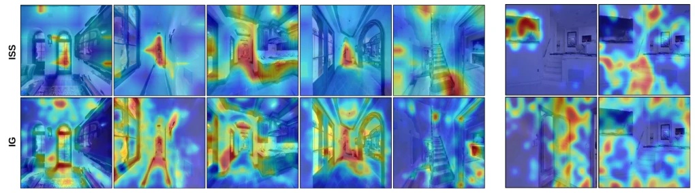
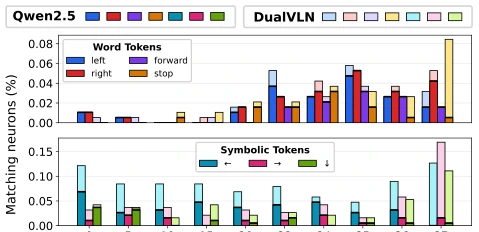

Fig. 1. Attribution heatmaps generated with ISS [10] for CorrectNav [11]. Red indicates higher sensitivity and blue lower. In text, darker tokens indicate higher sensitivity. Active subtask verbs (e.g., stop, through) and semantic cues (e.g., kitchen, doors, vestibule) have higher sensitivity. Note that even distant objects (kitchen, in traj. 1) activate their textual concepts.
方法Method
整体流程上，VLN 策略 πθ 接收指令 I 和视觉记忆 Mt，经 VLM 生成动作序列。可解释性部分引入三种归因方法：1) ISS [10]：通过模糊图像或替换文本进行干预，计算轨迹偏差来量化输入敏感度；2) IG [16]：沿插值路径积分梯度；3) TAM [19]：基于生成 token 的激活值。Steering 部分分为两类：1) Value-Vector-Guided：定位 FFN 层中与特定语义概念相关的 value vectors，通过钳位神经元激活值来偏置行为；2) Activation Steering：从记录的状态中提取正负概念的平均激活向量差，在推理时叠加到隐藏状态上。这种方法不修改参数，仅通过干预内部表示来引导模型，例如强制模型从“直接行动”切换到“推理模式”。
—

Fig. 2. Qualitative analysis of the heat maps from ISS vs. IG (left) and TAM (right). (a) ISS and IG heatmaps relate, from left to right, to the subtasks: stop by the window, go down the hall , walk through the left of the stove, walk towards the stairs, and go up the stairs. ISS heatmaps are more concentrated on the relevant objects, whereas IG heatmaps are more diffused. (b) TAM heatmaps correspond to the tokens screen (top left), stairs (top right), door (bottom left), and move forward (bottom right). TAM localizes semantic objects effectively, but produces noisier activations for abstract navigation actions predicted by VLN policies.
Fig. 3. ISS heatmap of visual-memory (top) and textual memory (bottom) intervention across trajectory progress. Each cell reports the mean ISS between the unperturbed action and the action predicted after blurring a given fraction of the images currently stored in memory or substituting part of the navigation instruction with its antonyms. All baselines are compared on the same ground truth trajectories. ISS scores increase from blue to red.
其他图片Other Figures

Fig. 4. Percentage of value vectors for DualVLN (lighter) and Qwen2.5-VL (darker) model for textual and symbolic navigation tokens (top 20 tokens). Each layer has 18,944 neurons. VLN training does not lose the concepts already present in the original VLM. Fine-tuning introduces activations for symbolic tokens, particularly in the last layers. The thick black line shows the shared overlap height between bars of different models. To avoid cluttering, we do not plot all layers of the model.